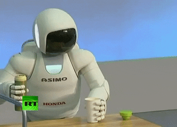
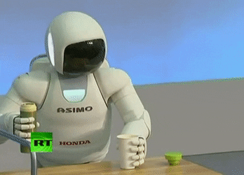
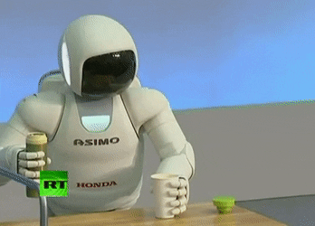

Motion planning (also known as the navigation problem or the piano mover's problem) is a term used in robotics for the process of breaking down a desired movement task into discrete motions that satisfy movement constraints and possibly optimize some aspect of the movement.
For example, consider navigating a mobile robot inside a building to a distant waypoint. It should execute this task while avoiding walls and not falling down stairs. A motion planning algorithm would take a description of these tasks as input, and produce the speed and turning commands sent to the robot's wheels. Motion planning algorithms might address robots with a larger number of joints (e.g., industrial manipulators), more complex tasks (e.g. manipulation of objects), different constraints (e.g., a car that can only drive forward), and uncertainty (e.g. imperfect models of the environment or robot).
Motion planning has several robotics applications, such as autonomy, automation, and robot design in CAD software, as well as applications in other fields, such as animating digital characters, video game artificial intelligence, architectural design, robotic surgery, and the study of biological molecules.
A basic motion planning problem is to produce a continuous motion that connects a start configuration S and a goal configuration G, while avoiding collision with known obstacles. The robot and obstacle geometry is described in a 2D or 3D workspace, while the motion is represented as a path in (possibly higher-dimensional) configuration space.
Configuration space
A configuration describes the pose of the robot, and the configuration space C is the set of all possible configurations. For example:
If the robot is a single point (zero-sized) translating in a 2-dimensional plane (the workspace), C is a plane, and a configuration can be represented using two parameters (x, y).
If the robot is a 2D shape that can translate and rotate, the workspace is still 2-dimensional. However, C is the special Euclidean group SE(2) = R2 {\displaystyle \times } \times SO(2) (where SO(2) is the special orthogonal group of 2D rotations), and a configuration can be represented using 3 parameters (x, y, θ).
If the robot is a solid 3D shape that can translate and rotate, the workspace is 3-dimensional, but C is the special Euclidean group SE(3) = R3 {\displaystyle \times } \times SO(3), and a configuration requires 6 parameters: (x, y, z) for translation, and Euler angles (α, β, γ).
If the robot is a fixed-base manipulator with N revolute joints (and no closed-loops), C is N-dimensional.
Free space
The set of configurations that avoids collision with obstacles is called the free space Cfree. The complement of Cfree in C is called the obstacle or forbidden region.
Often, it is prohibitively difficult to explicitly compute the shape of Cfree. However, testing whether a given configuration is in Cfree is efficient. First, forward kinematics determine the position of the robot's geometry, and collision detection tests if the robot's geometry collides with the environment's geometry.
Target space
Target space is a linear subspace of free space which denotes where we want the robot to move to. In global motion planning, target space is observable by the robot's sensors. However, in local motion planning, the robot cannot observe the target space in some states. To solve this problem, the robot goes through several virtual target spaces, each of which is located within the observable area (around the robot). A virtual target space is called a sub-goal
The Two Bots

Atlas
Atlas is a bipedal humanoid robot primarily developed by the American robotics company Boston Dynamics, with funding and oversight from the United States Defense Advanced Research Projects Agency (DARPA). The 1.8-meter (6 ft) robot is designed for a variety of search and rescue tasks, and was unveiled to the public on July 11, 2013
Design and development
The design and production of Atlas was overseen by the DARPA, an agency of the United States Department of Defense, in cooperation with Boston Dynamics. One of the robot's hands was developed by Sandia National Laboratories, while the other was developed by iRobot.[2] In 2013, DARPA program manager Gill Pratt compared the prototype version of Atlas to a small child, saying that "a 1-year-old child can barely walk, a 1-year-old child falls down a lot ... this is where we are right now."[1]
Atlas is based on Boston Dynamics' earlier PETMAN humanoid robot, and has four hydraulically-actuated limbs.[3] Constructed of aluminum and titanium, it stands approximately 5.9 feet tall, weighs 330 pounds (150 kg), and is illuminated with blue LEDs.[1][3] Atlas is equipped with two vision systems – a laser rangefinder and stereo cameras, both controlled by an off-board computer – and has hands with fine motor skill capabilities.[3] Its limbs possess a total of 28 degrees of freedom.[3] Atlas can navigate rough terrain and climb independently using its arms and legs, although the 2013 prototype version was tethered to an outside power supply.[3]
In October 2013 Boston Dynamics uploaded a video showing Atlas could withstand being hit by projectiles and balance on one leg.[4]
In 2014, Atlas robots programmed by six different teams competed in the DARPA Robotics Challenge to test the robot's ability to perform various tasks, including getting in and out of a vehicle and driving it, opening a door, and using a power tool. A variety of other robots also competed. The contest was inspired by the 2011 Fukushima Daiichi nuclear disaster, and carries a USD 2 million prize for the winning team.[1]
In the 2015 DARPA robotics finals Atlas from IHMC Robotics (named Running Man) came second behind the Korean team Kaist and their robot DRC-Hubo by a margin of six minutes, completing the entire course in a time of 50:26
Asimo
ASIMO (whose name comes from English initials or words Advanced Step in Innovative Mobility) is a humanoid robot created by Honda in 2000. It is currently displayed in Miraikan museum in the Japanese capital city of Tokyo.
Abilities and development
Honda began developing humanoid robots in the 1980s, including several prototypes that preceded ASIMO. It was the company's goal to create a walking robot. E0 was the first bipedal (two-legged) model produced as part of the Honda E series, which was an early experimental line of self-regulating, humanoid walking robot with wireless movements created between 1986 and 1993.[1][2] This was followed by the Honda P series of robots produced from 1993 through 1997. The research made on the E- and P-series led to the creation of ASIMO. Development began at Honda's Wako Fundamental Technical Research Center in Japan in 1999 and ASIMO was unveiled in October 2000.
ASIMO stands 130 cm (4 ft 3 in) tall and weighs 54 kg (119 lb). Research conducted by Honda found that the ideal height for a mobility assistant robot was between 120 cm and the height of an average adult, which is conducive to operating door knobs and light switches.[1][5] ASIMO is powered by a rechargeable 51.8 V lithium-ion battery with an operating time of one hour. Switching from a nickel metal hydride in 2004 increased the amount of time ASIMO can operate before recharging.[6] ASIMO has a three-dimensional computer processor that was created by Honda and consists of a three stacked die, a processor, a signal converter and memory.[7] The computer that controls ASIMO's movement is housed in the robot's waist area and can be controlled by a PC, wireless controller, or voice commands.
ASIMO has the ability to recognize moving objects, postures, gestures, its surrounding environment, sounds and faces, which enables it to interact with humans. The robot can detect the movements of multiple objects by using visual information captured by two camera "eyes" in its head and also determine distance and direction. This feature allows ASIMO to follow or face a person when approached.[1] The robot interprets voice commands and human gestures, enabling it to recognize when a handshake is offered or when a person waves or points, and then respond accordingly.[8] ASIMO's ability to distinguish between voices and other sounds allows it to identify its companions. ASIMO is able to respond to its name and recognizes sounds associated with a falling object or collision. This allows the robot to face a person when spoken to or look towards a sound.
.gif)


 



 1
1 2
2 3
3 4
4 5
5